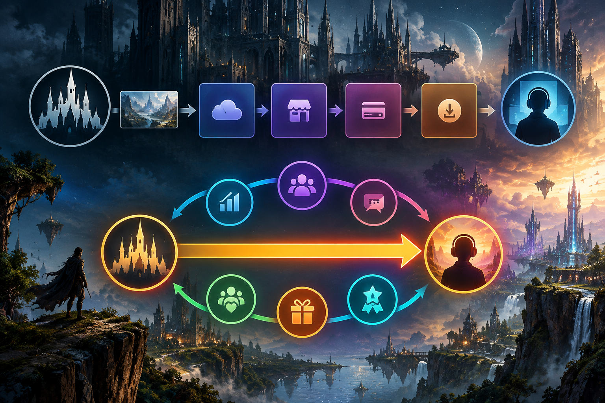
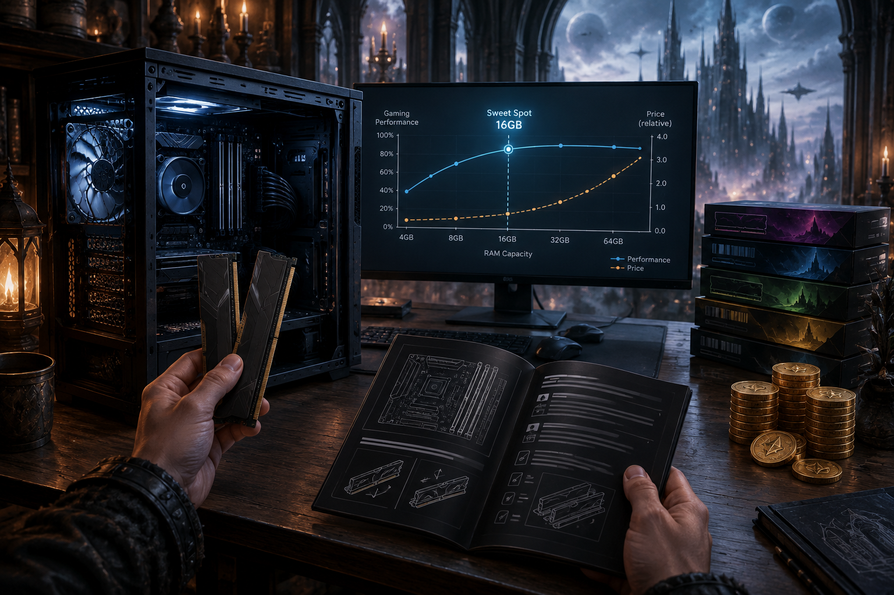
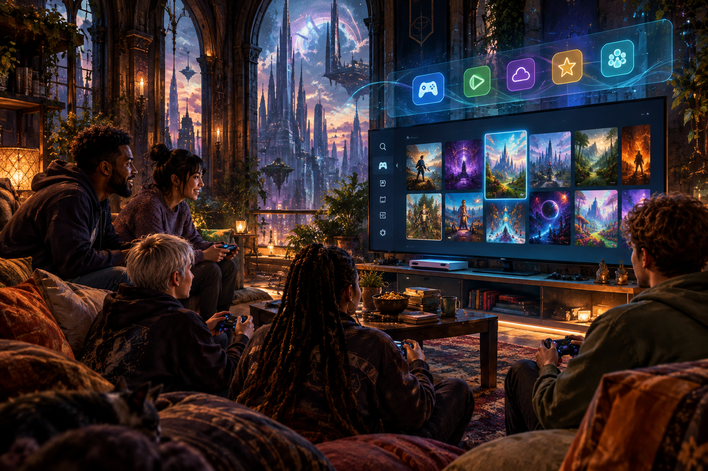

Direct To You: How Direct-to-Consumer Sales Are Transforming Gaming Culture in 2026
In 2026, the sweeping adoption of direct-to-consumer (D2C) sales models is reshaping not just how games reach players, but the very culture and expectations of gaming itself.
READ THE STORY ↗
Back to the Sweet Spot: Why 16GB RAM Rules Again in PC Gaming
As RAM prices spike and the gaming performance gap narrows, players are rediscovering the value of 16GB in 2026. The story behind this return, and what it means for both current and future gaming builds.
READ THE STORY ↗Inside the Machine: How AI is Reshaping the MMORPG Development Pipeline
A look at how leading MMORPG developers in 2026 are putting artificial intelligence to work behind the scenes—not just in gameplay, but in the very fabric of how these virtual worlds are built, tested, and innovated.
READ THE STORY ↗
More Than Words: The Next Evolution of RPG Dialogue Systems
How complex, adaptive dialogue systems are changing the landscape of choice, character, and consequence in modern RPGs—examining the mechanics, technology, and design challenges shaping the conversation-driven future of role-playing.
READ THE STORY ↗
The Subscription Shift: How Game Passes Are Changing Console Co-Op
Subscription services have upended console gaming access and design—nowhere is this shift more apparent than in cooperative play. Here’s how the new economics of co-op games, from access to design and developer impact, are recharting the future of playing together.
READ THE STORY ↗